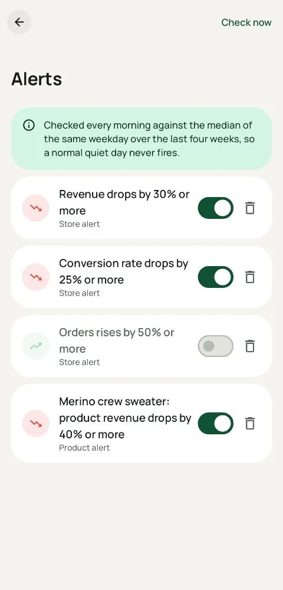

Why your GA4 conversion rate drops for the last two days
Orders were fine yesterday. Revenue was fine. But GA4 says your conversion rate fell by a third. Before you start debugging your checkout, check whether the day has settled.
The pattern
You open GA4 in the morning and see:
- Yesterday: normal orders and revenue, but sessions far higher than usual and conversion rate far lower.
- Two days ago: a smaller version of the same thing.
- Three days ago and earlier: everything looks normal.
Look again in two days and yesterday's conversion rate has quietly come back up. Nothing was wrong with your store.
Why it happens
GA4 doesn't finish processing a day when the day ends. Google says data can take 24 to 48 hours to process, and the newest days keep changing in that window. For session-based numbers, one effect matters most: until GA4 has attributed late-arriving traffic sources, some sessions can be counted more than once. Sessions go up, orders don't, so conversion rate = orders ÷ sessions goes down.
Revenue, orders and average order value are counted from purchase events, so they are much more stable for yesterday. It's the session-based rates that wobble: conversion rate, revenue per session, bounce and engagement rates.
How to tell a real drop from a delay
- Check orders first. If orders and revenue are normal for that weekday, a conversion drop is almost certainly sessions still settling.
- Compare a settled day. Look at three days ago against the same weekday in earlier weeks. If that day is normal, wait before you act.
- Look at the source breakdown. A spike in sessions from unassigned or (not set) sources on the newest days is a sign of late attribution.
- Split by device. A real checkout problem usually shows up on one device or browser, with orders down too.
Set alerts that don't cry wolf
Most alerting tools compare yesterday with the day before, so this delay fires a false conversion alarm almost every morning. You learn to ignore them, and then you miss the real one.
tapStat handles this for you. Revenue, orders, order value and refund alerts check yesterday, because those settle fast. Conversion-rate alerts check the newest settled day, three days ago, against the median of the same weekday over the previous weeks. The app says so up front, so a conversion alert about a few days ago isn't a surprise.

The short version
Alerts you can trust
tapStat's alerts know your normal week and wait for GA4 to settle.